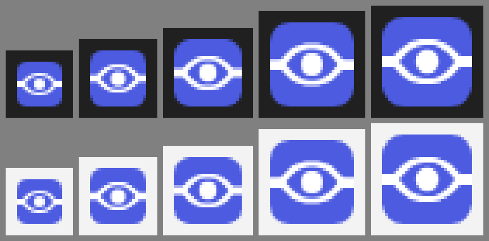
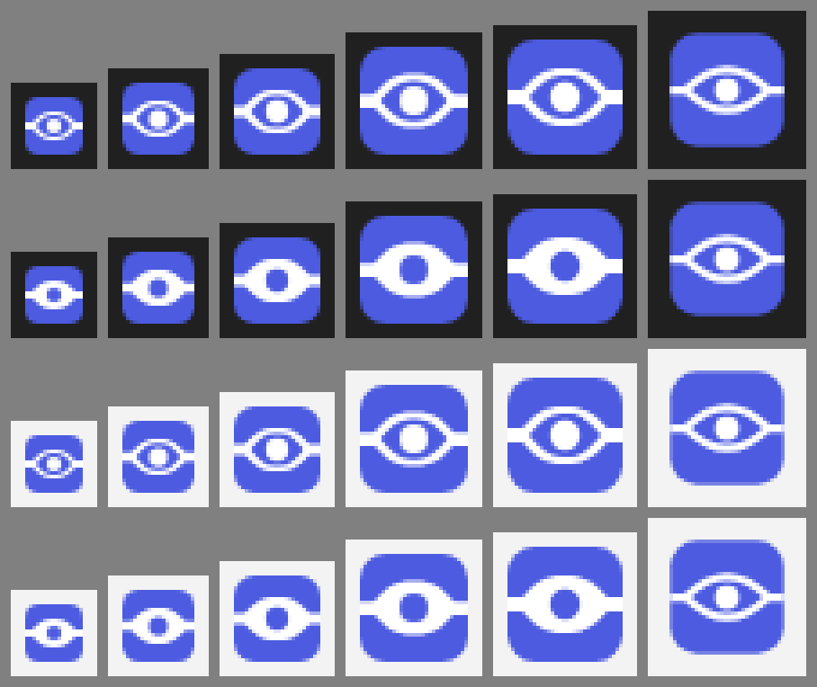
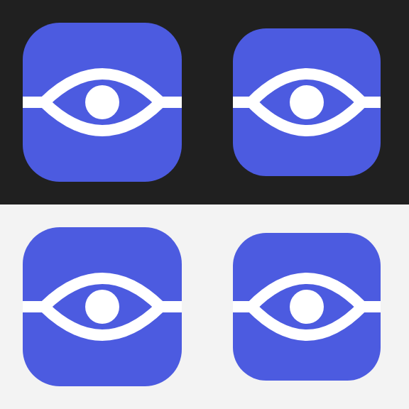

You chose Lens. At 64 pixels and up it already read well; at 16, where an icon is seen most, a plain shrinking turned it to grey mush. This round keeps your drawing for the large sizes and redraws it on a 16-pixel grid for the small ones, plus a version on Apple's shape for macOS. The colours are yours, unchanged. Say yes, or what to change; one choice below is yours either way.
16 to 32 come from the small drawing, 36 and up from the full one. On a high-density screen your browser draws these sharper than Windows does at 100 % scaling; the enlarged strip in the next box shows the real pixels.
Each small size as a taskbar or a title bar draws it, enlarged six times without smoothing: a dark desk above, a light one below. The tile's edges, the line and the pupil sit on whole pixels at 16, 24 and 32; 20 is the softest, because every edge falls on a quarter pixel there.

The eye stays an outline with a white pupil, as in your drawing. It is the same mark at every size.
A solid white eye with a blue pupil. Crisper and bolder at 16, but the pupil changes from white to blue, it looks closer to the usual "show" eye, and the icon changes character between 32 pixels (solid) and 36 (outlined).
The same two as real pixels, enlarged four times. From the top: outlined on a dark desk, solid on a dark desk, outlined on a light desk, solid on a light desk. Each row ends with the full drawing at 36 pixels, the next size up, for comparison:

The same mark on Apple's rounded square, which is a little smaller than the canvas, as Apple's grid asks. In the picture: the Windows and Linux drawing on the left, the macOS one on the right, both at 256 pixels.

Your blue, #4C5BE0, is at the floor of what Microsoft asks against a dark taskbar (3.0 to 1; it is 4.9 to 1 on a light one). One step lighter in the same hue, #5866E6, gives 3.5 to 1 on dark and 4.3 to 1 on light, with the white mark still clear on it. First row: yours. Second row: the lighter one. Keeping yours is fine; this is only so that you have seen it.
Three draughtsmen each drew a full set with a different aim (faithful to your drawing, pixel first, bold), each rendering its work and judging it by eye, 12 to 13 rounds each. Three judges then looked at the renders: one for the small sizes, one for whether it is still your mark, one for the platforms' rules. All three chose the faithful set; the solid eye above is the runner-up's idea, kept because it is a real choice. Before the files are frozen, the tool that makes the real icon files renders them once more, and the mark is compared with Git's logo and the well-known Git clients' icons.